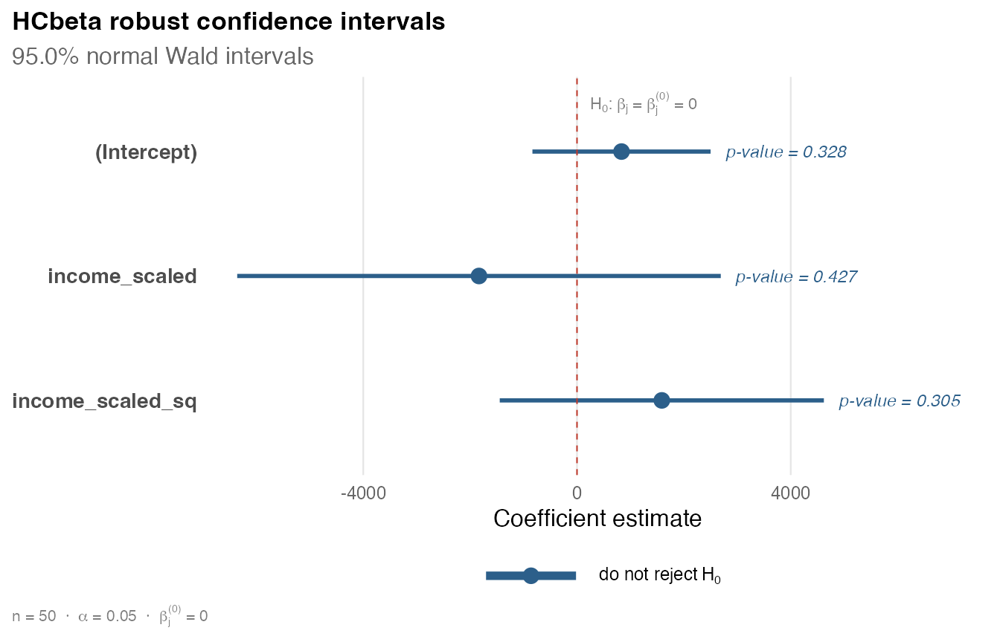
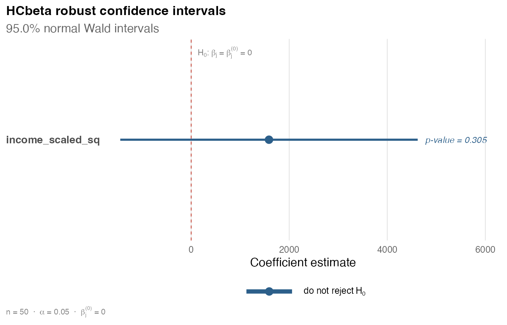
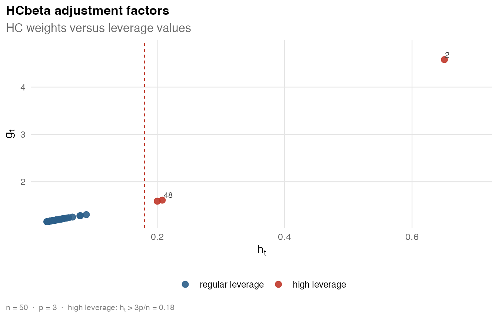
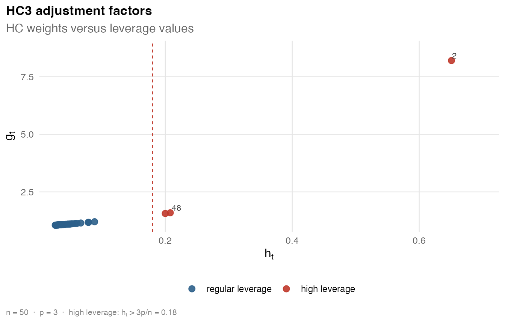

This vignette gives a compact overview of hcinfer. It
uses only base R for data preparation, then shows the main functions,
extraction methods, and plots.
Data and Model
The examples use the PublicSchools data included with
the package. The model is the quadratic income model used in the HCbeta
application.
library(hcinfer)
schools <- PublicSchools
schools$income_scaled <- schools$income / 10000
schools$income_scaled_sq <- schools$income_scaled^2
fit <- lm(expenditure ~ income_scaled + income_scaled_sq, data = schools)
fit
#>
#> Call:
#> lm(formula = expenditure ~ income_scaled + income_scaled_sq,
#> data = schools)
#>
#> Coefficients:
#> (Intercept) income_scaled income_scaled_sq
#> 832.9 -1834.2 1587.0The call to lm() omits observations with missing model
variables.
Available Estimators
Use hc_methods() to list the estimators and their
default arguments.
hc_methods()
#> # A tibble: 9 × 4
#> type label description default_arguments
#> <chr> <chr> <chr> <chr>
#> 1 hc0 HC0 White heteroskedasticity-consistent estimator. none
#> 2 hc1 HC1 HC0 with degrees-of-freedom scaling. none
#> 3 hc2 HC2 Leverage-adjusted estimator with exponent 1. none
#> 4 hc3 HC3 Leverage-adjusted estimator with exponent 2. none
#> 5 hc4 HC4 Adaptive leverage correction by Cribari-Neto. none
#> 6 hc4m HC4m Modified HC4 correction by Cribari-Neto and d… none
#> 7 hc5 HC5 High-leverage correction by Cribari-Neto, Sou… k = 0.7
#> 8 hc5m HC5m Modified HC5 correction by Li, Zhang, Zhang, … k = 0.7, k1 = 1,…
#> 9 hcbeta HCbeta Beta-distribution leverage correction. c1 = 7, c2 = 0.7…The available types are "hc0", "hc1",
"hc2", "hc3", "hc4",
"hc4m", "hc5", "hc5m", and
"hcbeta".
Robust Inference
Use hcinfer() to perform heteroskedasticity-robust
inference for an lm() object. The default estimator is
HCbeta.
result <- hcinfer(fit)
result
#>
#> ── HCbeta robust inference ─────────────────────────────────────────────────────
#> Model: `expenditure ~ income_scaled + income_scaled_sq`
#> Observations: 50 | Parameters: 3
#> Robust covariance: HCbeta
#> Confidence level: 95.0% | Normal critical value: 1.9600
#> Use `summary()` for p-values, test results, confidence intervals, and
#> diagnostics.Use summary() for a readable report with tests on
regression coefficients, confidence intervals, leverage diagnostics, and
heteroskedasticity-robust diagnostics.
summary(result)
#>
#> ── HCbeta robust inference summary ─────────────────────────────────────────────
#>
#> ── Model ──
#>
#> Formula: `expenditure ~ income_scaled + income_scaled_sq`
#> Observations: 50 | Parameters: 3 | Residual df: 47
#>
#> ── Robust covariance ──
#>
#> Estimator: HCbeta
#> Confidence level: 95.0% | Normal critical value: 1.9600
#> Tests are two-sided normal Wald tests, one coefficient at a time.
#> Test results use alpha = 0.050.
#>
#> ── Leverage diagnostics ──
#>
#> # A tibble: 6 × 2
#> statistic value
#> <chr> <chr>
#> 1 minimum 0.02669
#> 2 q1 0.03106
#> 3 median 0.03912
#> 4 mean 0.06
#> 5 q3 0.04962
#> 6 maximum 0.6508
#> Maximum leverage: observation 2 (index 2), value 0.6508
#> Average leverage: 0.0600
#> Concentration: 10.85 x average leverage
#>
#> ── Robust weights ──
#>
#> # A tibble: 6 × 2
#> statistic value
#> <chr> <chr>
#> 1 minimum 1.156
#> 2 q1 1.167
#> 3 median 1.187
#> 4 mean 1.276
#> 5 q3 1.212
#> 6 maximum 4.581
#> Maximum weight: observation 2 (index 2), value 4.5807
#> Median weight: 1.1869
#> Concentration: 3.86 x median weight
#>
#> ── Method parameters ──
#>
#> # A tibble: 12 × 3
#> parameter value role
#> <chr> <chr> <chr>
#> 1 c1 7 method constant
#> 2 c2 0.75 method constant
#> 3 lower 0.01 method constant
#> 4 upper 0.99 method constant
#> 5 mu_hat 0.94 estimated quantity
#> 6 s2_w 0.008504 estimated quantity
#> 7 phi_hat 5.632 estimated quantity
#> 8 a_hat 5.294 estimated quantity
#> 9 b_hat 0.3379 estimated quantity
#> 10 zeta 0.5 estimated quantity
#> 11 a_tilde 3.147 estimated quantity
#> 12 b_tilde 0.669 estimated quantity
#>
#> ── Coefficient tests ──
#>
#> # A tibble: 3 × 9
#> term estimate robust_se z p_value alpha test_result
#> <chr> <chr> <chr> <chr> <chr> <chr> <chr>
#> 1 (Intercept) 832.9 850.7 0.9791 0.328 0.050 do not reject H0
#> 2 income_scaled -1834 2309 -0.7945 0.427 0.050 do not reject H0
#> 3 income_scaled_sq 1587 1547 1.026 0.305 0.050 do not reject H0
#> ci ci_relation
#> <chr> <chr>
#> 1 [-834.3, 2500] includes null
#> 2 [-6359, 2691] includes null
#> 3 [-1446, 4620] includes null
#>
#> ── Confidence intervals ──
#>
#> # A tibble: 3 × 4
#> term null_value interval interpretation
#> <chr> <chr> <chr> <chr>
#> 1 (Intercept) 0 [-834.3, 2500] includes null
#> 2 income_scaled 0 [-6359, 2691] includes null
#> 3 income_scaled_sq 0 [-1446, 4620] includes null
#> test_result is based on p_value < alpha. Do not reject H0 does not mean that H0
#> is true.You can choose another covariance matrix estimator with
type.
result_hc3 <- hcinfer(fit, type = "hc3")
result_hc3
#>
#> ── HC3 robust inference ────────────────────────────────────────────────────────
#> Model: `expenditure ~ income_scaled + income_scaled_sq`
#> Observations: 50 | Parameters: 3
#> Robust covariance: HC3
#> Confidence level: 95.0% | Normal critical value: 1.9600
#> Use `summary()` for p-values, test results, confidence intervals, and
#> diagnostics.Test Extraction
Use tests() to extract coefficient-level Wald tests as a
tibble.
tests(result)
#> # A tibble: 3 × 8
#> term estimate null_value std_error z_value p_value alpha reject
#> <chr> <dbl> <dbl> <dbl> <dbl> <dbl> <dbl> <lgl>
#> 1 (Intercept) 833. 0 851. 0.979 0.328 0.05 FALSE
#> 2 income_scaled -1834. 0 2309. -0.794 0.427 0.05 FALSE
#> 3 income_scaled_sq 1587. 0 1547. 1.03 0.305 0.05 FALSESelect a single coefficient by name or position.
tests(result, parm = "income_scaled_sq")
#> # A tibble: 1 × 8
#> term estimate null_value std_error z_value p_value alpha reject
#> <chr> <dbl> <dbl> <dbl> <dbl> <dbl> <dbl> <lgl>
#> 1 income_scaled_sq 1587. 0 1547. 1.03 0.305 0.05 FALSE
tests(result, parm = 3)
#> # A tibble: 1 × 8
#> term estimate null_value std_error z_value p_value alpha reject
#> <chr> <dbl> <dbl> <dbl> <dbl> <dbl> <dbl> <lgl>
#> 1 income_scaled_sq 1587. 0 1547. 1.03 0.305 0.05 FALSEChange the significance level (alpha) to update the
rejection decision. The test statistic and p-value are not
recomputed.
tests(result, alpha = 0.10)
#> # A tibble: 3 × 8
#> term estimate null_value std_error z_value p_value alpha reject
#> <chr> <dbl> <dbl> <dbl> <dbl> <dbl> <dbl> <lgl>
#> 1 (Intercept) 833. 0 851. 0.979 0.328 0.1 FALSE
#> 2 income_scaled -1834. 0 2309. -0.794 0.427 0.1 FALSE
#> 3 income_scaled_sq 1587. 0 1547. 1.03 0.305 0.1 FALSEConfidence Interval Extraction
Use confint() to extract heteroskedasticity-robust
confidence intervals.
confint(result)
#> # A tibble: 3 × 4
#> term conf_low conf_high level
#> <chr> <dbl> <dbl> <dbl>
#> 1 (Intercept) -834. 2500. 0.95
#> 2 income_scaled -6359. 2691. 0.95
#> 3 income_scaled_sq -1446. 4620. 0.95You can select a coefficient and change the confidence level.
confint(result, parm = "income_scaled_sq")
#> # A tibble: 1 × 4
#> term conf_low conf_high level
#> <chr> <dbl> <dbl> <dbl>
#> 1 income_scaled_sq -1446. 4620. 0.95
confint(result, parm = "income_scaled_sq", level = 0.90)
#> # A tibble: 1 × 4
#> term conf_low conf_high level
#> <chr> <dbl> <dbl> <dbl>
#> 1 income_scaled_sq -958. 4132. 0.9Coefficients and Covariance Matrices
The coef() method returns the OLS estimates stored in
result.
coef(result)
#> (Intercept) income_scaled income_scaled_sq
#> 832.9144 -1834.2029 1587.0423The vcov() method extracts the robust covariance matrix
stored in the hcinfer object.
robust_vcov <- vcov(result)
robust_vcov
#> (Intercept) income_scaled income_scaled_sq
#> (Intercept) 723617.6 -1962262 1312195
#> income_scaled -1962262.2 5329884 -3569755
#> income_scaled_sq 1312195.3 -3569755 2394627Heteroskedasticity-robust standard errors are the square roots of the diagonal entries.
Covariance-Only Workflow
Use vcov_hc() when you only need the
heteroskedasticity-robust covariance matrix and diagnostics.
cov_hcbeta <- vcov_hc(fit)
cov_hcbeta
#>
#> ── HCbeta robust covariance ────────────────────────────────────────────────────
#> Model: `expenditure ~ income_scaled + income_scaled_sq`
#> Dimension: 3 x 3
#> Observations: 50
#> Parameters: 3
#> Maximum leverage: 0.6508
#> Maximum robust weight: 4.5807
#> Use `vcov()` to extract the stored covariance matrix.The same summary() and vcov() generics work
for covariance objects.
summary(cov_hcbeta)
#>
#> ── HCbeta robust covariance summary ────────────────────────────────────────────
#>
#> ── Model ──
#>
#> Formula: `expenditure ~ income_scaled + income_scaled_sq`
#> Observations: 50 | Parameters: 3 | Residual df: 47
#>
#> ── Leverage diagnostics ──
#>
#> # A tibble: 6 × 2
#> statistic value
#> <chr> <chr>
#> 1 minimum 0.02669
#> 2 q1 0.03106
#> 3 median 0.03912
#> 4 mean 0.06
#> 5 q3 0.04962
#> 6 maximum 0.6508
#> Maximum leverage: observation 2 (index 2), value 0.6508
#> Average leverage: 0.0600
#> Concentration: 10.85 x average leverage
#>
#> ── Robust weights ──
#>
#> # A tibble: 6 × 2
#> statistic value
#> <chr> <chr>
#> 1 minimum 1.156
#> 2 q1 1.167
#> 3 median 1.187
#> 4 mean 1.276
#> 5 q3 1.212
#> 6 maximum 4.581
#> Maximum weight: observation 2 (index 2), value 4.5807
#> Median weight: 1.1869
#> Concentration: 3.86 x median weight
#>
#> ── Method parameters ──
#>
#> # A tibble: 12 × 3
#> parameter value role
#> <chr> <chr> <chr>
#> 1 c1 7 method constant
#> 2 c2 0.75 method constant
#> 3 lower 0.01 method constant
#> 4 upper 0.99 method constant
#> 5 mu_hat 0.94 estimated quantity
#> 6 s2_w 0.008504 estimated quantity
#> 7 phi_hat 5.632 estimated quantity
#> 8 a_hat 5.294 estimated quantity
#> 9 b_hat 0.3379 estimated quantity
#> 10 zeta 0.5 estimated quantity
#> 11 a_tilde 3.147 estimated quantity
#> 12 b_tilde 0.669 estimated quantity
vcov(cov_hcbeta)
#> (Intercept) income_scaled income_scaled_sq
#> (Intercept) 723617.6 -1962262 1312195
#> income_scaled -1962262.2 5329884 -3569755
#> income_scaled_sq 1312195.3 -3569755 2394627You can also choose another estimator and pass its method constants.
cov_hc5 <- vcov_hc(fit, type = "hc5", k = 0.7)
cov_hc5
#>
#> ── HC5 robust covariance ───────────────────────────────────────────────────────
#> Model: `expenditure ~ income_scaled + income_scaled_sq`
#> Dimension: 3 x 3
#> Observations: 50
#> Parameters: 3
#> Maximum leverage: 0.6508
#> Maximum robust weight: 2946.7866
#> Use `vcov()` to extract the stored covariance matrix.Plots
Use plot() on an hcinfer object to display
robust confidence intervals.
plot(result)
Select one coefficient with parm.
plot(result, parm = "income_scaled_sq")
Use plot() on a vcov_hc() object to show
leverage values and HC adjustment factors.
plot(cov_hcbeta)
Set label_top to control how many observations with the
largest adjustment factors are labeled.

A Small Comparison
The following base R code compares HCbeta and HC3 for the quadratic income coefficient.
test_hcbeta <- tests(result, parm = "income_scaled_sq")
test_hc3 <- tests(result_hc3, parm = "income_scaled_sq")
comparison <- data.frame(
estimator = c("HCbeta", "HC3"),
estimate = c(test_hcbeta$estimate, test_hc3$estimate),
robust_se = c(test_hcbeta$std_error, test_hc3$std_error),
p_value = c(test_hcbeta$p_value, test_hc3$p_value)
)
comparison
#> estimator estimate robust_se p_value
#> 1 HCbeta 1587.042 1547.458 0.3050896
#> 2 HC3 1587.042 1995.242 0.4263730